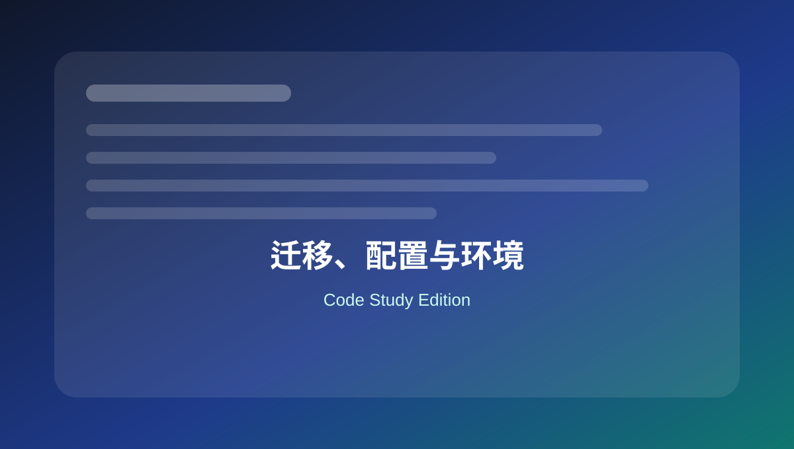

19 迁移、配置与环境
整理 wp-config、环境判断、URL 设置、上传路径、search-replace 和维护模式。

本页关键词
wp-config.php
WP_HOME
WP_SITEURL
WP_ENVIRONMENT_TYPE
migration
学习目标
- 理解 wp-config 常见配置
- 会区分开发/生产环境
- 知道迁移时 URL 和数据库配置重点
- 知道敏感信息不要上传
代码使用提醒
本页代码适合用于学习和研究。复制到正式网站前，请先备份，并优先在测试环境验证。
涉及用户输入、后台保存、接口请求、删除操作和邮件发送时，要同时考虑权限、nonce、sanitize、validate 和 escape。
1. 数据库配置
配置
<?php
define( 'DB_NAME', 'database_name_here' );
define( 'DB_USER', 'username_here' );
define( 'DB_PASSWORD', 'password_here' );
define( 'DB_HOST', 'localhost' );
define( 'DB_CHARSET', 'utf8' );
define( 'DB_COLLATE', '' );
不要把真实数据库密码提交到公开仓库。
2. 固定站点 URL
迁移
<?php
define( 'WP_HOME', 'https://example.com' );
define( 'WP_SITEURL', 'https://example.com' );
迁移后后台进不去时，可临时在 wp-config.php 中指定 URL。
3. 环境类型
配置
<?php
define( 'WP_ENVIRONMENT_TYPE', 'development' ); // local, development, staging, production
if ( 'production' !== wp_get_environment_type() ) {
define( 'WP_DEBUG', true );
define( 'WP_DEBUG_LOG', true );
define( 'WP_DEBUG_DISPLAY', false );
}
不同环境使用不同调试策略。
4. 提高内存限制
配置
<?php
define( 'WP_MEMORY_LIMIT', '256M' );
define( 'WP_MAX_MEMORY_LIMIT', '512M' );
是否生效还取决于主机和 PHP 配置。
5. 禁用文件编辑器
安全
<?php
define( 'DISALLOW_FILE_EDIT', true );
生产站建议禁用后台主题/插件编辑器。
6. 迁移后 WP-CLI 替换域名示例
运维
wp search-replace 'https://old-domain.com' 'https://new-domain.com' --skip-columns=guid --dry-run
wp search-replace 'https://old-domain.com' 'https://new-domain.com' --skip-columns=guid
先 dry-run 检查。WP-CLI 能正确处理序列化数据。
7. 维护模式文件
运维
<?php
// .maintenance 文件示例
$upgrading = time();
根目录存在 .maintenance 时，WordPress 会进入维护模式。更新失败时可检查是否残留该文件。
本页总结
迁移和环境配置重点是 wp-config、URL、数据库和调试策略。真实密码和 API Key 不要进入公开代码仓库。